Koraishutir Kochuri / Green peas Kachori
According to me, winter is incomplete without 'green peas'. Am I right ?? We Bengalis love to eat 'koraishutir kochuri' during winter. In my home nobody brings this kochuri from shop. My mom always makes this at home with 'aloo dom' , 'payesh' and everybody loves it. Nowadays we don't need to wait till winter for green peas because now almost everywhere frozen peas are available. I very much enjoy the combination of fennel, asafoetida (hing) and green peas. This kochuri goes very well with 'dum aloo'. Try this in your kitchen and share some of your winter stories with me.

Ingredients
- 1 cup of green peas.
- 2 green chilies.
- 1 inch ginger.
- 2 pinches of hing / asafoetida.
- Bhaja masala (1 Teaspoon cumin seeds, 1 Teaspoon fennel seeds, 1 Teaspoon coriander seeds, 1 dry red chilli).
- Salt and sugar.
- Dough (1 cup maida/flour, pinch of salt, 1 Tablespoon of white oil, some warm water).
- Oil for deep frying.

Steps
First dry roast the cumin, fennel, coriander seeds and dry red chilli in a pan for 5 - 7 minutes.
Then put them in a blender and grind it to powder (bhaja masala).
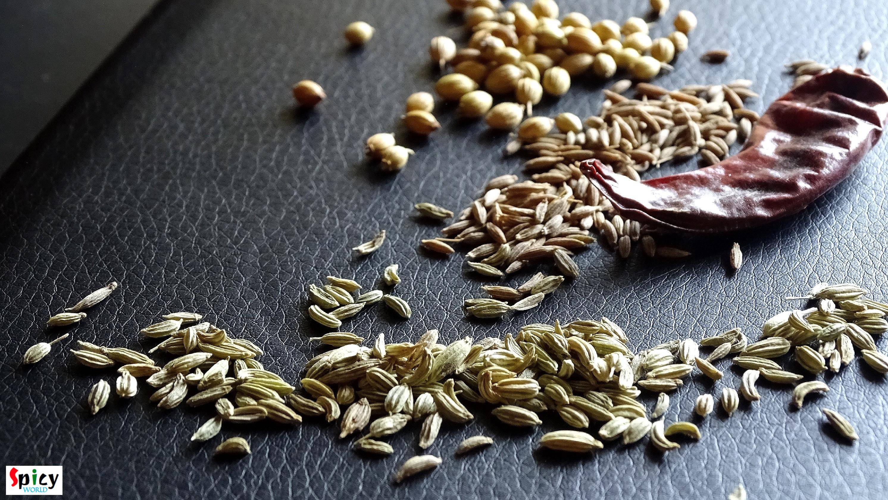
Now put all the ingredients for the dough in a mixing bowl except water.
Mix the dry ingredients first with your hand and gradually add water and make semi soft dough.
Knead the dough very well, apply some oil on top and keep it aside in a bowl with cover for 20 minutes.
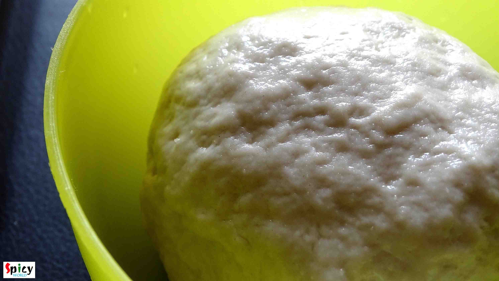
Now put green peas, green chilies and ginger in a blender with very little water.
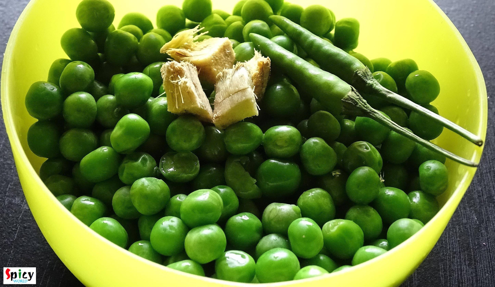
Make a smooth paste. If the paste become coarse, the 'kachori's will not be puffed up properly.
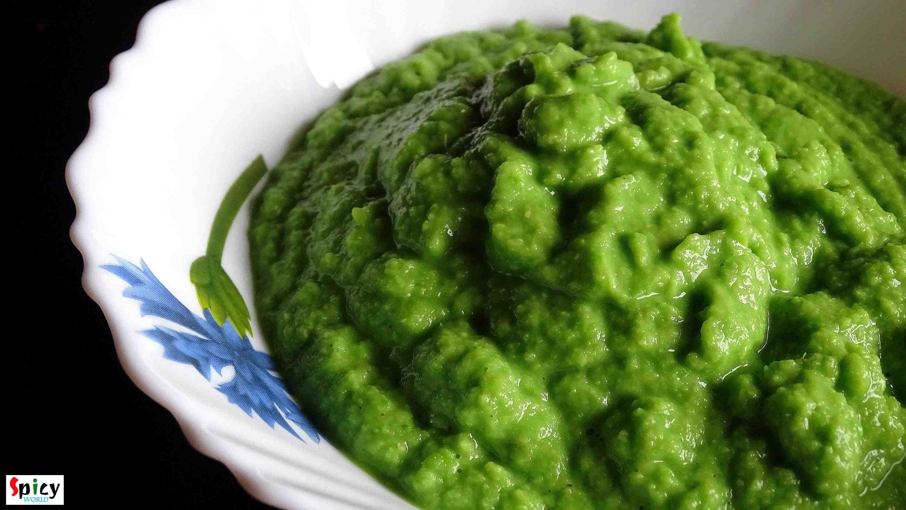
Heat 2 Teaspoons oil in a pan.
Add pinch of hing.
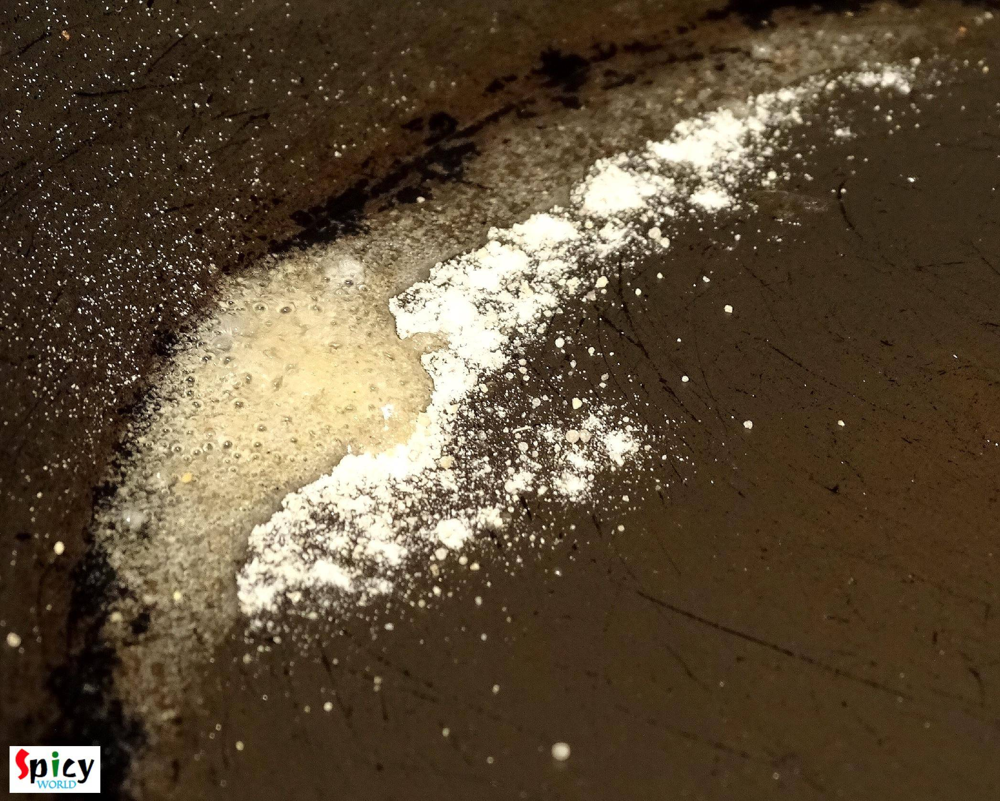
Then add the paste, salt and ½ Teaspoon sugar. Mix it very well for 5 - 7 minutes.
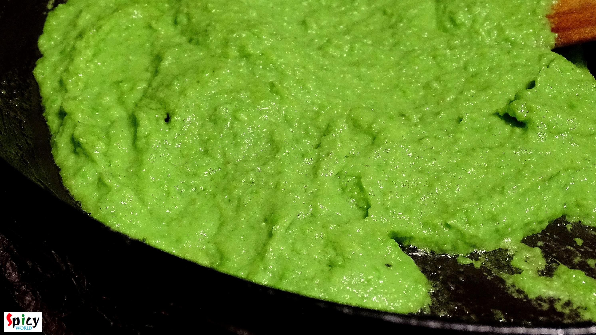
Then add 1 yo 2 Teaspoons bhaja masal or dry roasted powder. Mix it well.
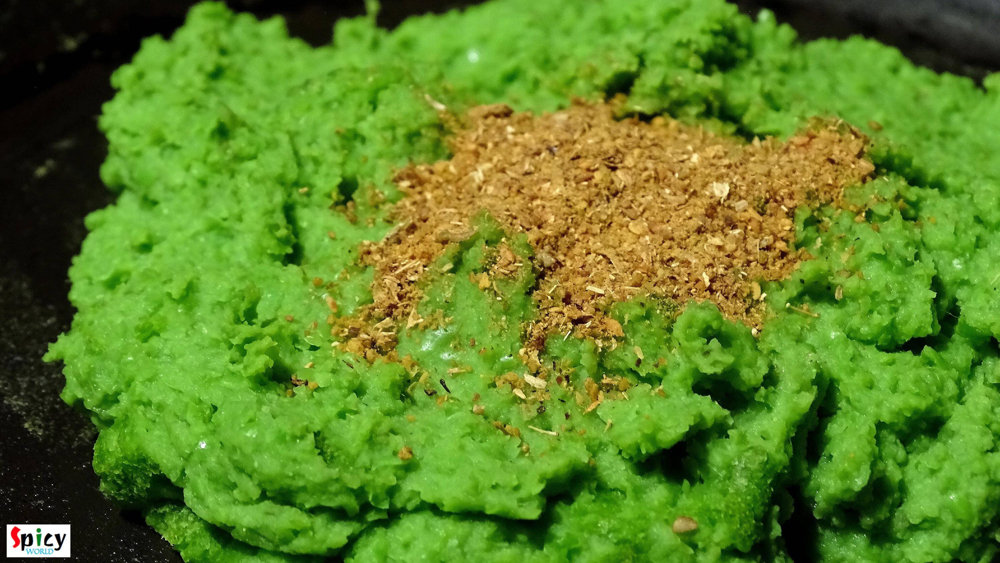
When the mixture will leave the pan properly, remove it from the pan.
The filling is ready and let it cool down a bit.
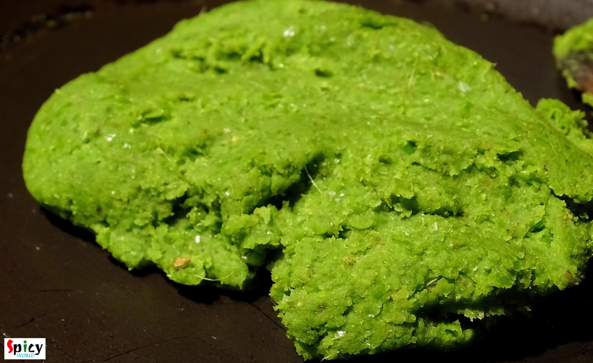
Take a small portion from the dough and make a lemon size ball.
Then flatten it with your fingers and place 1 Teaspoon filling in the center.
Seal the edges properly and again flatten it.
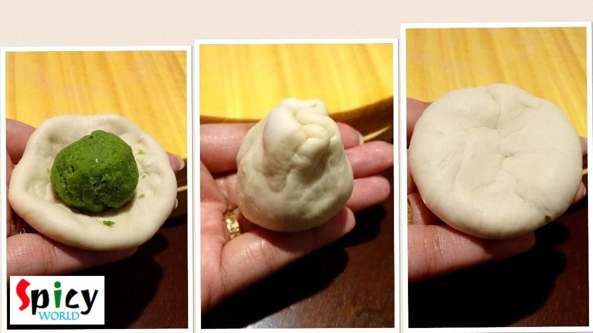
Put the flatten ball in little oil and spread it to 2 - 3 inches with rolling pin.
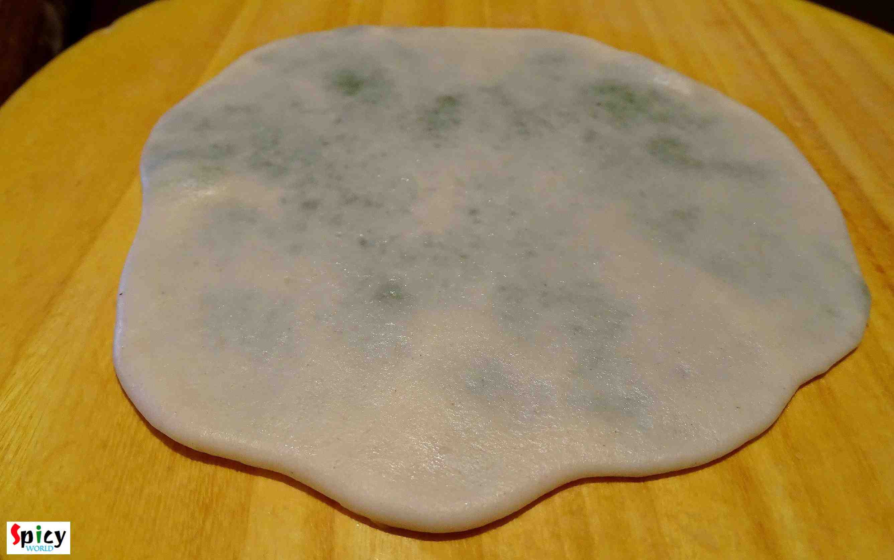
Heat white oil in a kadai for deep frying.
Put the flatten bread in hot oil.
Press it gently with the spatula, it will puff up.
Then flip it and fry for 10 seconds.
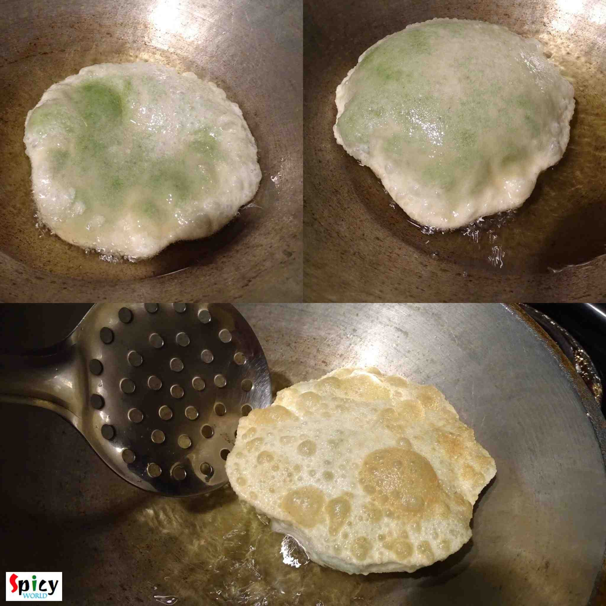
Your koraishutir kochuri is ready ...
- Enjoy them hot with dum aloo or simle potato curry.
")